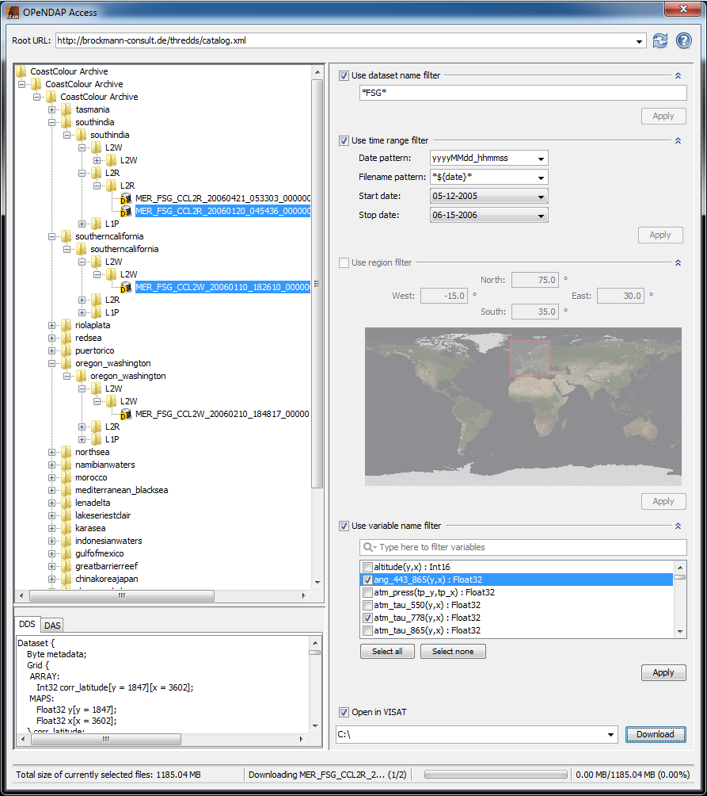

| OPeNDAP client overview | |
The BEAM OPeNDAP client allows to access an OPeNDAP server and download files using the data access protocol (DAP). The client offers the possibility to filter the displayed catalog entries by various characteristics.

You can enter the URL of an OPeNDAP server in the field at the top (please ensure the URL ends with "catalog.xml"). The catalog content will be displayed as a tree structure. VISAT will remember previously entered URLs.
The tree structure on the right displays the contents of the chosen server.
Files which can be accessed via DAP are displayed as .
For files accessible via DAP, their DDS and DAS can be viewed (for more information about DDS and DAS please refer
to http://www.opendap.org/pdf/dap_2_data_model.pdf">http://www.opendap.org/pdf/dap_2_data_model.pdf ).
With the filters, you can restrict the displayed files.
A filter can be set after selecting the respective check box at the upper left.
To apply the filter to the catalog, you must click the apply button.
The filter will become inactive after deselecting the check box.
If you activate the check box, the previously defined filter will become active again.
You can combine multiple filters to restrict your search for files.
The region filter and the variable filter both need information about the content of the catalog before they can be
applied.
With this filter, you can search for whole file names or parts appearing in a file name. You can use wildcards:
This filter enables you to make a temporal restriction about the given files.
The filtering is performed over the file name, so you need to know in which format the date is given in the names of
the files over which you want to perform a filtering.
You can set both start and end time for your filtering.
Files of which no temporal information could be extracted will not be filtered out.
The region filter allows you to define a region of interest.
You can set this region by either changing the coordinate values in the text fields or dragging and resizing
the rectangle on the world map.
The filter will remove all files from the selection which are outside of the specified rectangle.
The filter is only applicable to files providing information about their geospatial extent in their metadata.
When no such information is available, the file will not be affected by the filter.
This filter allows to filter over the variables in the given files.
The filter will start scanning for variable information as you browse through the folder structure.
It will be available as soon as variable informations are available.
In the filter, you can check and uncheck the variables you are interested in.
When applied, the filter will keep all files which contain at least one of the selected variables.
You can download the files selected in the tree by clicking the button titled "Download" in the lower right. When the client is run in VISAT, you can specify to open the products after download has completed. After you have set the target directory, the status bar will inform you about the progress of the download.